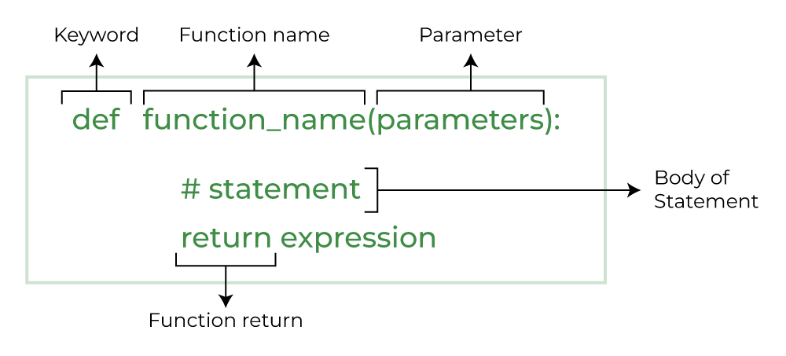

Functions
Contents
3.1. Functions¶
What you’ll learn
How to split up a problem into smaller parts using functions
How to define and call functions
How to test functions
How to repeat code using
whileandforloopsRelational operators
Boolean variables
3.1.1. Calling Functions¶
A function is named sequence of computer instructions that performs a specific task. With the help of functions, we can break our program into small modular chunks. So, as we start to write larger programs, functions help us to make it more organized and manageable.
Let’s start by examining the built-in Python function round.
x = round(2.5)
print(x)
2
When the Python interpreter reaches the expression round(2.5) it recognises that round is a built-in function, executes the function and returns the result. The name of the function gives an indication of what the function does, but we can get further information by using another function help:
help(round)
Help on built-in function round in module builtins:
round(number, ndigits=None)
Round a number to a given precision in decimal digits.
The return value is an integer if ndigits is omitted or None. Otherwise
the return value has the same type as the number. ndigits may be negative.
Exercise 3.1
What will
round(-0.5)return? Try it.Use
helpto find out what the functionabsdoes.
3.1.2. Defining functions¶
Let’s start with a very simple example of a mathematical function:
We can think of \(f\) as being as machine which eats a number, squares it, then sends us the result. Given this definition of \(f\), we can use it to calculate the square of any number we please:
and so on. Let’s define this function in Python:
def f(x):
y = x ** 2
return y
If you run the code above, nothing will appear to happen. However, we can now use it to calculate the square of any number we choose:
f(3)
9
Or to set the value of a variable:
x = f(10)
print(x)
100
Because f returns a number, we can use it anywhere Python expects a number.
x = f(3) + f(10)
print(x)
y = round(f(5))
print(y)
109
25
We can also use a variable as an argument:
n = 8
m = f(n)
print(n, "squared is", m)
8 squared is 64
Notice something very important here. The name of the variable we pass as an argument (n) has nothing to do with the name of the parameter (x). It is as if x = n is executed when f(n) is called. It doesn’t matter what the value was named in the caller, inside the function its name is x.
Exercise 3.2
Use the function f to calculate:
\((999 + 123)^2\)
\(999^2 + 123^2\)
\(3^4\)
3.1.3. Functions Definition Notation¶

A function definition consists of
A header which defines the function name and parameter(s) e.g.
def f(x):A body consisting of one or more lines of Python code e.g.
y = x ** 2(Optional) a return statement which defines the value to return from the function e.g.
return y
The body and header must be indented (the Python standard is 4 spaces).
3.1.4. Example¶
Consider the following code, which calculates and prints the number of digits in a number x = 19583. The variable i is initialised to 0 and then incremented each time the while loop is executed. When the loop exits, i contains the result - the total number of times the loop body was executed, which is the same as the number of digits.
x = 19583
i = 0
while x > 1:
i = i + 1
x = x / 10
print(i)
5
Below we convert this code into a function number_of_digits:
def number_of_digits(x):
i = 0
while x > 1:
i = i + 1
x = x / 10
return i
print(number_of_digits(19583))
5
Exercise 3.3
The function number_of_digits fails for arguments less than 1. Write a a new function number_of_digits_2 which returns the correct number of digits for positive and negative values. For values between -1 and 1 the function should return 0.
# write your function definition here
print(number_of_digits_2(999)) # should print 3
print(number_of_digits_2(0.5)) # should print 0
print(number_of_digits_2(-0.5)) # should print 0
print(number_of_digits_2(-999)) # should print 3
3.1.5. Combining Functions and Loops¶
We really start to see the utility of functions when we combine them with loops. What is the total number of digits in all numbers from 1 to 99 inclusive? At each execution of the loop, number_of_digits(i) is added to the variable total.
total = 0
for i in range(1, 100):
total = total + number_of_digits(i)
print(total)
187
Exercise 3.4
Use the function number_of_digits_2 to calculate the total number of digits of all numbers in the range \(-99 \leq n \leq 99\).
3.1.6. Combining Functions¶
It is possible to ‘chain together’ function so that one function is called inside the body of another function. In the below example, total_digits(n) returns the total number of digits in numbers between 1 and n. I have repeated the definition of the number_of_digits functions here so you can see it all fits together.
def number_of_digits(x):
i = 0
while x > 1:
i = i + 1
x = x / 10
return i
def total_digits(n):
total = 0
for i in range(1, n):
total = total + number_of_digits(i)
return total
print(total_digits(100))
187
Exercise 3.5
Write a function total_digits_2(m, n) which returns the total number of digits in all integers between m and n (you may assume that m < n).
# write your function definition here
print(total_digits_2(-100, 100))
3.1.7. Keep Your Program Tidy!¶
When you use functions, you might find your Python programs growing quite large. It is good practice in this case to keep your program tidy by keeping your program in a consistent order, as follows:
# Import statements at the top
import numpy as np
import matplotlib.pyplot as plt
import moominlib as ml
# Next, function definitions
def one_function(x, y, z):
# Python statements
# Python statements
return val
def another_function(x, y, z):
# Python statements
# Python statements
return val
# The main program body. This line will be executed first!
# More code
# Function calls
# etc